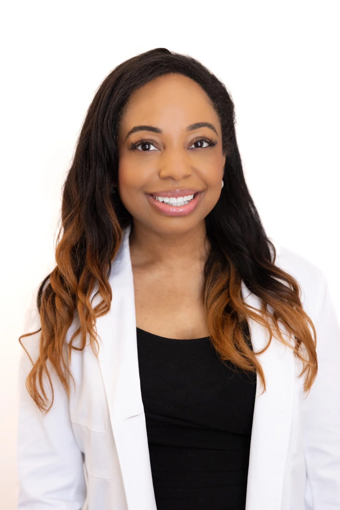
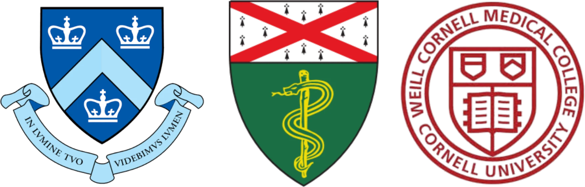

About Dr. Brianna
Board-certified dermatologist, native New Yorker, and lifelong advocate for healthy skin.


Dr. Brianna Olamiju is a board-certified dermatologist dedicated to providing expert, compassionate care for patients of all skin types. A native New Yorker, Dr. Olamiju completed her undergraduate studies at Columbia University. She earned her medical degree from the Yale School of Medicine and completed her dermatology residency at Weill Cornell New York-Presbyterian Hospital. She is a clinical instructor at Mount Sinai Icahn School of Medicine, where she teaches residents.
Dr. Olamiju has contributed extensively to the field of dermatology, publishing numerous journal articles and textbook chapters. Her work has been recognized by organizations including the American Academy of Dermatology, JAMA Dermatology, and the Women's Dermatologic Society, where she serves on the Board of Directors. She is also active within the American Society for Dermatologic Surgery and the Skin of Color Society.
Dr. Olamiju is committed to empowering patients through education, personalized treatment plans, and evidence-based care. Her approach blends clinical expertise, warmth, and a unique understanding of each patient's overall goals. Dr. Olamiju's areas of interest include acne, hair loss, eczema, psoriasis, pigmentary disorders, and skin cancer screening. She is also passionate about cosmetic dermatology, including neurotoxins, filler, lasers, PRP, chemical peels, and microneedling.
When she's not in the office seeing patients, Dr. Olamiju enjoys exploring New York City's food scene, fitness, travel, and community engagement. She is passionate about inspiring confidence and helping patients achieve their healthiest skin.